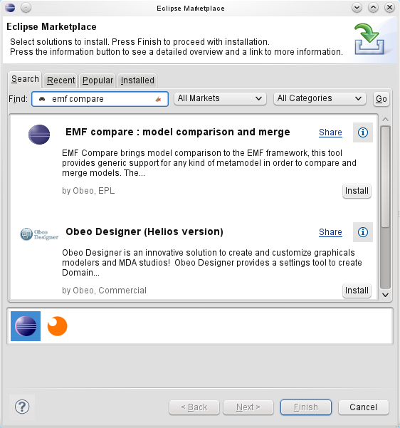

Marketplace Client
Using the bundled Eclipse marketplace client you can install EMF Compare in one click. Just type "emf compare", click on search, and then on install.

Update Site
EMF has been part of the Eclipse release train since Galileo, you can install it using the following update sites, depending on your platform. Note that the following are not meant to be visited in your internet browser; they must be pasted in the Help > Install New Software dialog of your Eclipse, as p2 repositories.
http://download.eclipse.org/releases/juno http://download.eclipse.org/releases/indigo http://download.eclipse.org/releases/helios http://download.eclipse.org/releases/galileo
The Download page lists more specific update sites if you wish to try one of the latest integration builds.
Compatibility
Please note that the EMF Compare development team does its best to maintain downward compatibility towards Galileo (Eclipse 3.5). Following is the compatibility chart :
| EMF Compare | Eclipse 4.3 - EMF 2.9 | Eclipse 4.2 - EMF 2.8 | Eclipse 3.8 - EMF 2.8 | Eclipse 3.7 - EMF 2.7 | Eclipse 3.6 - EMF 2.6 | Eclipse 3.5 - EMF 2.5 | Eclipse 3.4 - EMF 2.4 | Eclipse 3.3 - EMF 2.3 | Eclipse 3.2 - EMF 2.2 |
|---|---|---|---|---|---|---|---|---|---|
| 2.1 | |||||||||
| 2.0 | |||||||||
| 1.3 | |||||||||
| 1.2 | |||||||||
| 1.1 | |||||||||
| 1.0 |
An empty cell indicates that the compatibility hasn't been tested for a particular combination.
The main points of interest are highlighted in the following picture :
Once installed, you can compare your files (locally or from any Version Control System) as usual using the compare with menu.

The following displays the important part of a model life cycle with regards to the comparison. The full life cycle can be followed on Sample Use Case
For this test, we'll suppose that you are trying to use EMF Compare on UML models shared under git. This will not go in details about UML and Git. We'll assume that you know how to manipulate an UML model, create or clone a git repository, share a project under it and use standard Git operations.
The name of our sample project will be "library". It contains a single folder "model" containing two models :
The model itself is a very simple library. Graphically speaking :

We commit this initial file as the original model. We then slightly modify it so that it now looks like :

But how do we know exactly what changed? Let's compare this with the file from the Git Index :

This will open a comparison editor that initially displays empty panels on its bottom half. Let's select one of the differences displayed on its top half :

This is useful in order to determine exactly what changed in our version, but serves no other purpose : merging changes here would only mean reverting back our modifications to the "clean" state from the repository. Let's commit our changes on the master branch.
After that, our model can evolve, and evolve separately in multiple branches. Let's consider the case where we would have a master branch differing from a borrowables branch such as the two look like this (the branching point was the model we've already displayed above) :
| Master | Borrowables |
|---|---|

|

|
Before we continue working on our Borrowables branch, we'd like to retrieve all modifications that have been pushed to master. With the "Borrowables" branch checked out, we'll use the Compare With > Branch, Tag or Reference action :

and compare with master :

This shows us all differences between our local copy and the master branch that were made since the 'branching' point.

Same as previously, you can navigate through the differences via the top panel, the structural view. There are three main kind of elements displayed here.
Regular elements, that mimic the containment tree of your input models, are there to separate the various differences and let you know where they were actually detected. Then there are
incoming differences, decorated with a blue arrow (
 ) or a derived icon, and
outgoing differences decorated with a green arrow (
) or a derived icon, and
outgoing differences decorated with a green arrow (
 ) or a derived icon.
) or a derived icon.
Incoming differences are changes that were made in the remote branch (here, master) since the branching point (common ancestor). Outgoing differences are changes taht were made in the local copy (here, the borrowables branch) since the branching point.
There are no conflicts here, since UML uses computed identifiers (XMI ID) for the model elements. Thus, what looks like a conflict (the "Date" type that's been added on both branch in the types packages) is actually two distinct differences.
The interface also lets you display the common ancestor of both models through the
 icon. For example, if we select the
Book class, we can see how it looks like on all three versions :
icon. For example, if we select the
Book class, we can see how it looks like on all three versions :

You can navigate through the differences using the appropriate actions, either the previous (
 ) or the next (
) or the next (
 ) difference.
) difference.
The remaining two actions are those that actually interest us here we can either merge all non-conflicting differences to the local copy through
 or merge them one after the other through
or merge them one after the other through
 .
.
Merging all differences is not what we seek : we want to keep the changes we made locally, not revert them to the state they had before the branching point (which is their current state on master, the right side). We will then select all incoming differences one after the other and merge them one by one. This gives us our merged model :

Notice that merged differences are displayed in italics and have a distinct icon. All that's left is to save, our model now contains both our local changes and the changes that were made on master.